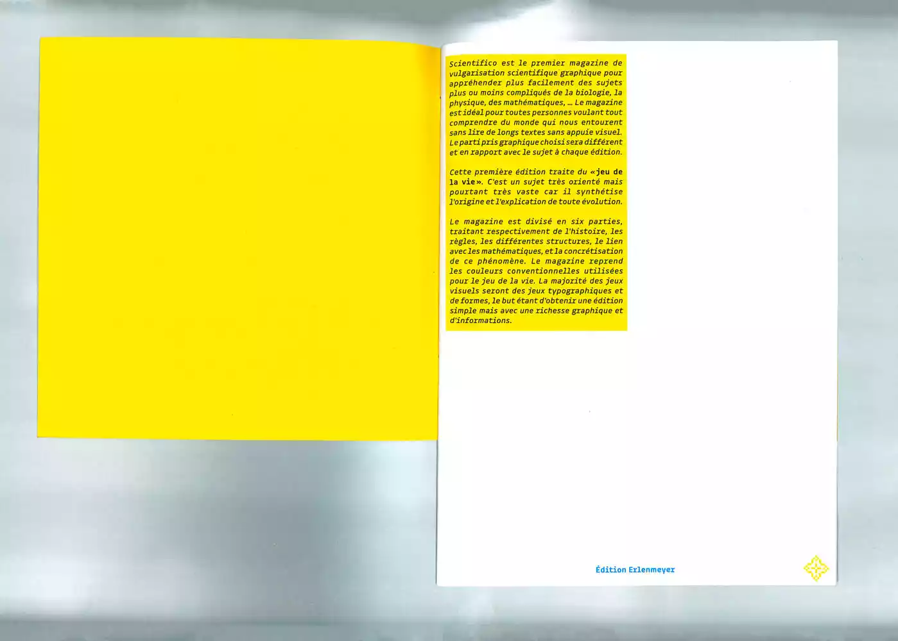
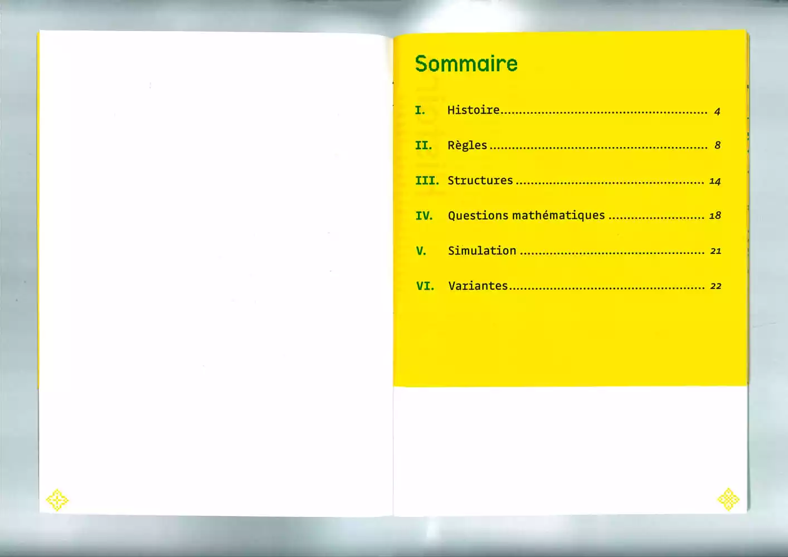
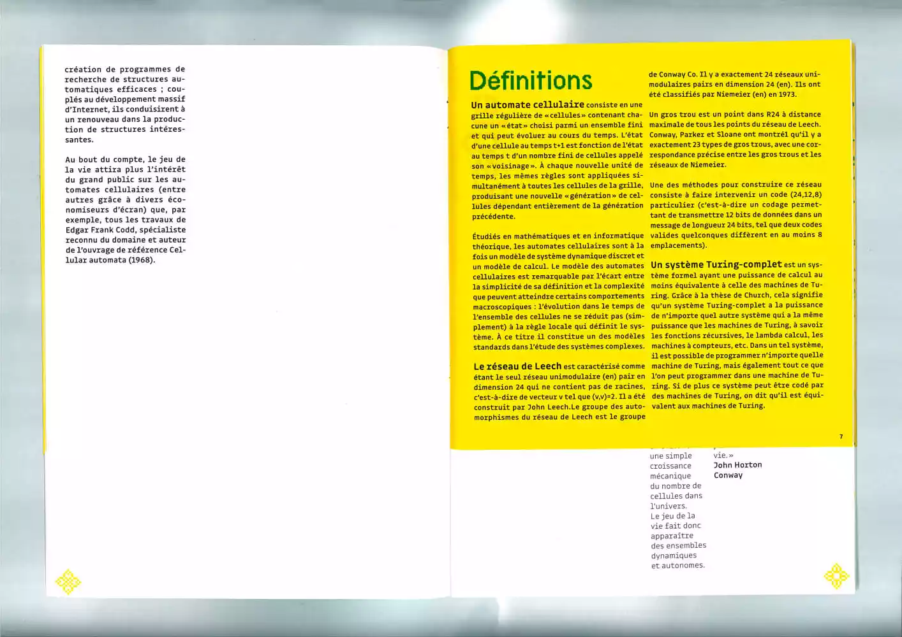
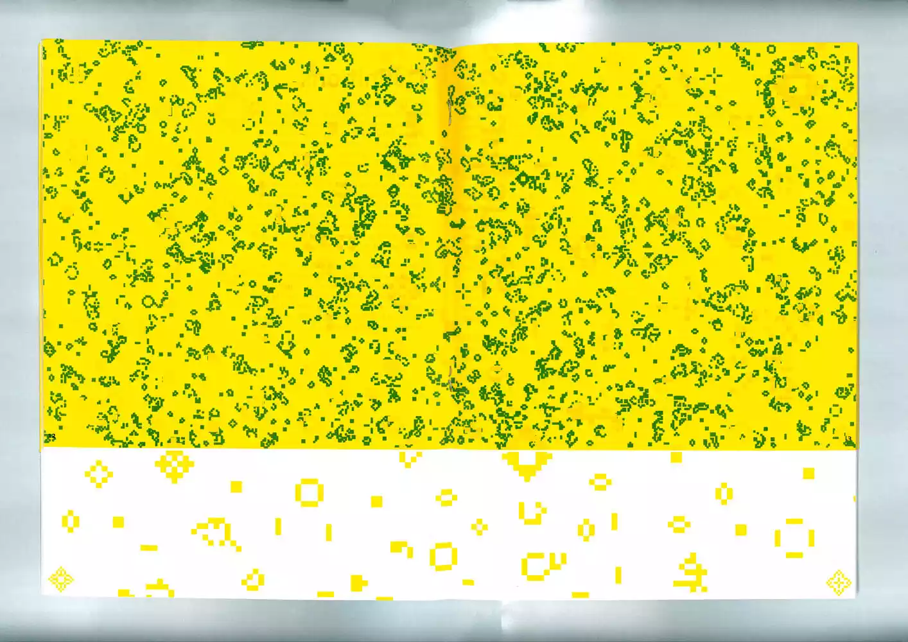
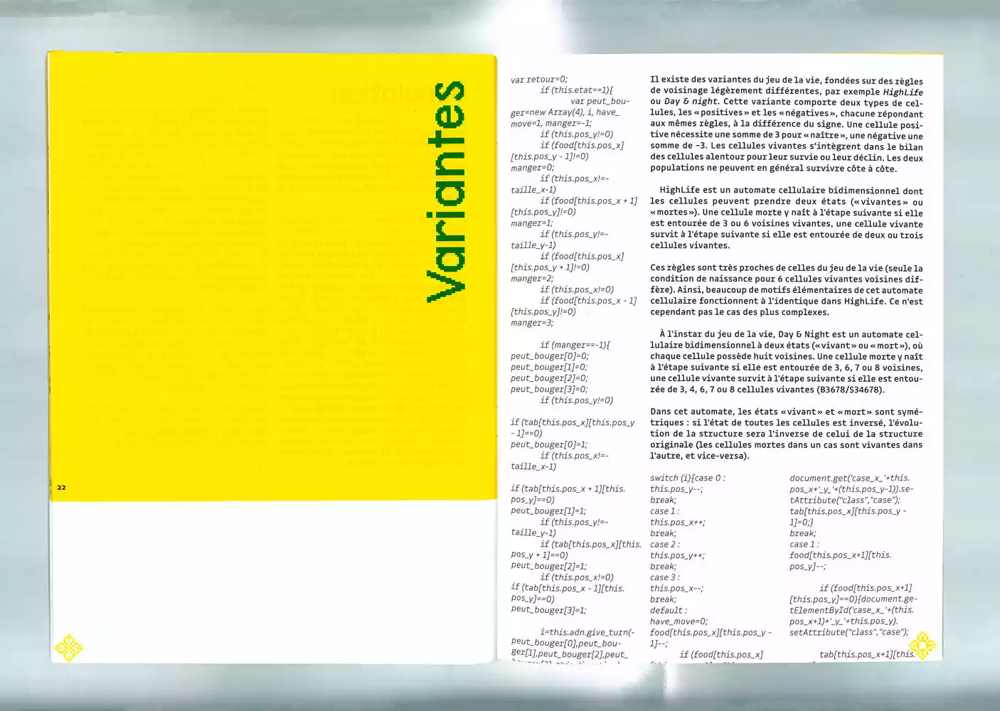
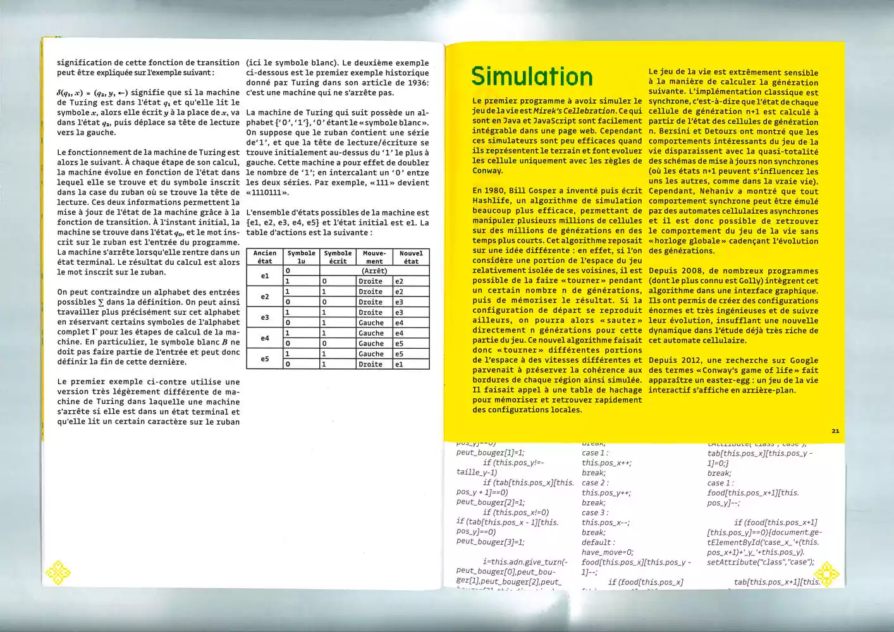
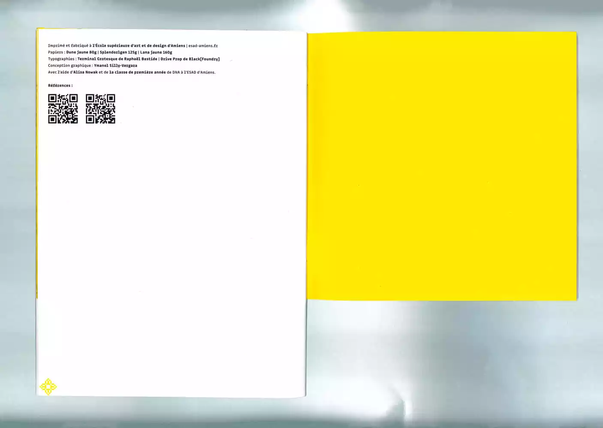

Scientypo
Design éditorial
Revue typographique traitant du «Jeu de la Vie». L’édition joue donc avec des motifs qu’on retrouve dans
ce programme informatique. Les pages carrées rappellent les pixels qui composent les motifs du «Jeu de
la Vie».
Le magazine a pour but de vulgariser textuellement et graphiquement les sujets scientifiques les plus
compliqués et délicats à aborder.






